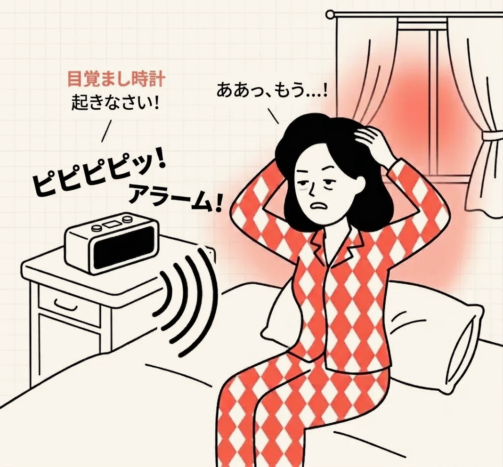
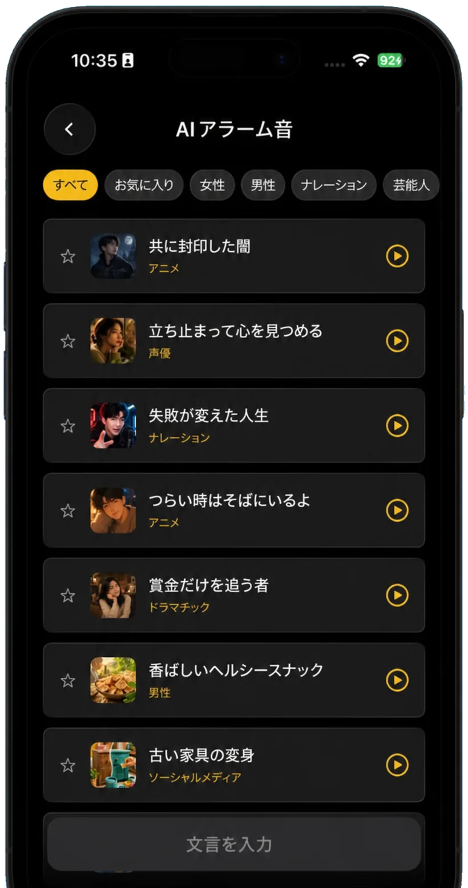
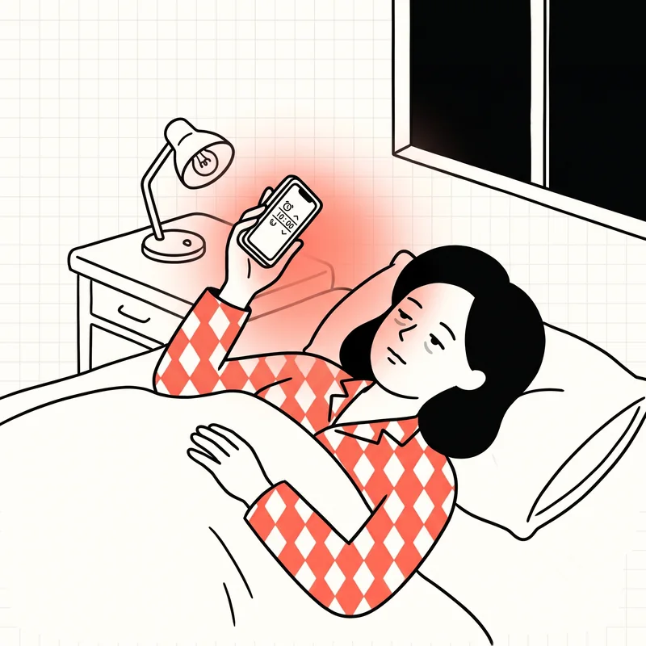
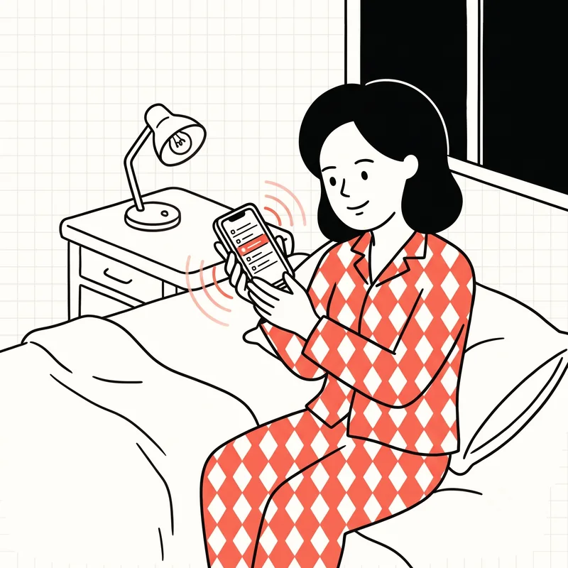

Zaco Labs
自分だけのAIアラーム音
おなじ着信音には、体のほうが先に慣れてしまいます。Wakyは、声優・ナレーション・アニメまで多彩なAIボイスが、自分で決めた文章を読み上げてくれるアラームアプリです。
iOS · Android · 無料でダウンロード

Wakyがふつうのアラームと違うところ
音を大きくするのではなく、聞き流しにくくしました。
-
選べるAIボイス
女性、男性、声優、ナレーション、アニメ、ドラマチックまで。カテゴリごとに聴き比べて、気に入った声はお気に入りに登録できます。
-
好きな文章をそのまま
「今日はプレゼンの日、早く起きて」のように入力した文章を、AIボイスが読み上げます。自分の状況に合ったアラーム音ができあがります。
-
設定する前に試聴
リストの再生ボタンで先に聴いてから選べます。翌朝になってがっかりすることがありません。
-
簡単には慣れない
おなじ着信音は数日で脳が聞き流します。毎回ちがう声とちがう言葉は、そう簡単に聞き流せません。

使い方は3ステップ
はじめて開いてアラームをセットするまで、1分あれば十分です。
-

アラームの時刻を決める
いつものアラームと同じように、起きたい時刻を設定します。
-

声と文章を選ぶ
AIアラーム音の一覧から好きな声を選ぶか、文章を入力して新しいアラーム音を作ります。
-
その声で目を覚ます
朝は着信音ではなく、自分で選んだ声が自分で選んだ言葉で起こしてくれます。
よくある質問
ほかに気になることがあれば、メールでお問い合わせください。
アラーム音に慣れてしまって起きられないときはどうすればいいですか？
毎朝おなじ音を聞いていると、脳はその音を「起きるべき合図」ではなく背景音として処理するようになります。すでに聞き流している音の音量だけを上げてもあまり効果はなく、音そのものを定期的に変えるほうが有効です。とくに単純な電子音より、言葉を聞き取る必要がある人の声は聞き流しにくくなります。Wakyは、複数のAIボイスから選んで入れ替えながら使えるように作られたアプリです。
アラームを何個セットしても寝てしまうのはなぜですか？
アラームを止めてまた眠る、という流れが習慣になると、止める動作がほとんど意識のないまま行われます。止めた記憶さえ残らないこともあります。さらに、目覚めては眠り直すことを繰り返すと睡眠が細切れになり、最終的に起きたときによけい重く感じられます。数を増やすより、一度で確実に気づけるアラームをひとつ使うほうが現実的です。
AIの声で起こしてくれるアラームアプリはありますか？
あります。Wakyがそのアプリです。機械的な着信音のかわりに、声優・ナレーション・アニメ・ドラマチックなど、さまざまな種類のAIボイスがアラーム音を読み上げます。カテゴリごとに選んで試聴してから設定でき、気に入った声はお気に入りに保存できます。iOSとAndroidで無料でダウンロードできます。
普通のアラームとAIアラームは何が違いますか？
普通のアラームは決まった音を繰り返し鳴らします。音に内容がないため、数日で背景音のように聞き流せてしまいます。AIアラームは声が文章を読み上げるので言葉を聞き取る必要があり、声や文章を変えれば毎朝ちがう音で目覚めることになります。音を大きくするのではなく、音の種類を変えるという考え方です。
好きな文章でアラーム音を作れるアプリはありますか？
Wakyで文章を入力すると、AIボイスがその文章を読み上げるアラーム音ができます。「今日はプレゼンの日」のようにその日の予定や自分にかけたい言葉を入れておけば、朝はその文章がそのまま流れます。保存する前に再生ボタンで試聴できます。
アラーム以外に、朝すっきり起きるために何を変えればいいですか？
就寝時刻を一定に保つこと、起きたらすぐ明るい光を浴びることがよく勧められます。ただしこうした習慣が身につくには時間がかかるため、その間は確実に気づけるアラームを併用するのが現実的です。アラームが生活習慣の代わりにはなりませんが、習慣が定着するまで支える役割は果たします。
Wakyは無料ですか？
はい。App StoreとGoogle Playから無料でダウンロードしてお使いいただけます。
どの端末で使えますか？
iPhoneとAndroidスマートフォンの両方に対応しています。各ストアでWakyを検索するか、このページのダウンロードボタンをご利用ください。
AIボイスにはどんな種類がありますか？
女性、男性、声優、ナレーション、アニメ、ドラマチック、ソーシャルメディアなどのカテゴリに分かれています。一覧の上部でカテゴリを選ぶと、好みの雰囲気の声だけを表示できます。
アラーム音を自分で作れますか？
作れます。文章入力から好きな文章を書くと、AIボイスがその文章を読み上げるアラーム音ができます。
アラーム音を試聴できますか？
一覧の再生ボタンを押せばその場で聴けます。アラームに設定する前にお試しください。
気に入った音をまとめておけますか？
星をタップするとお気に入りに追加されます。お気に入りタブから、保存した声だけを表示できます。
問い合わせや要望はどこに送ればよいですか？
zaco.labs@gmail.com までお送りください。Wakyを開発しているZaco Labsが直接確認します。
明日の朝は、ちがう声で目を覚ましてみませんか
WakyはiOSとAndroidで無料でダウンロードできます。